In italiano Monte Scabro o Monte Fumo, a seconda che in tedesco sia Rauhkofel oppure Rauchkofel. Antonio Berti dice che in base all'analisi delle carte più antiche, il toponimo corretto è Rauchkofel; ma poi il figlio Camillo, nella traduzione del volume di W. Eckerth, afferma che in realtà il vero nome è Rauhkofel. Ai posteri l'ardua sentenza.
Da Misurina scendiamo a Carbonin. Con la Croda Rossa d'Ampezzo ci si distrae facilmente alla guida!
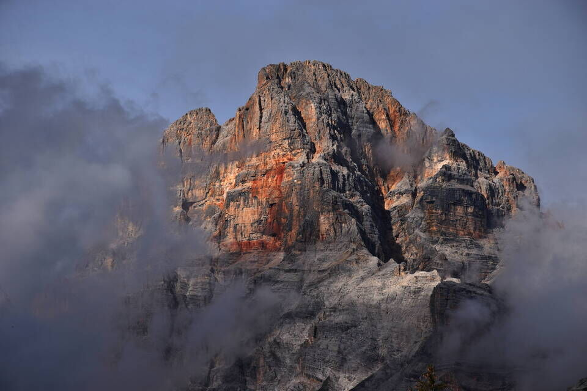
C'inoltriamo nella val Fontana di Sigismondo (o val Costa Bella).
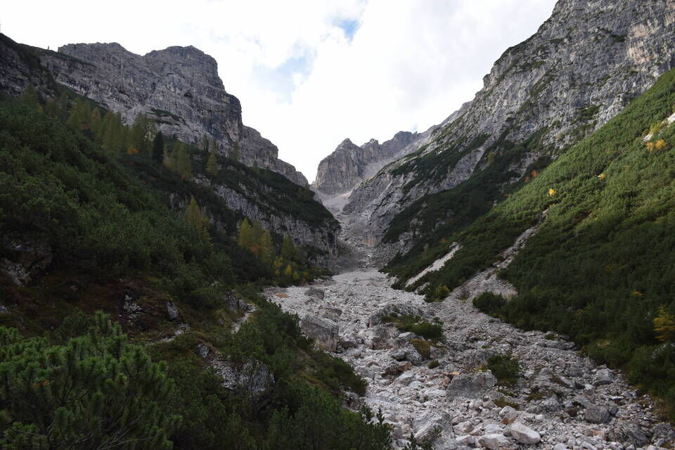
La Costa Bella.
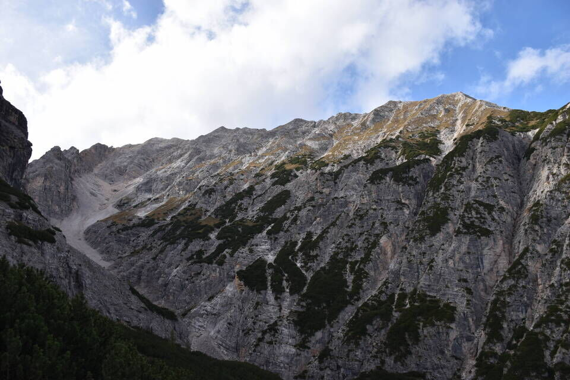
Per buon sentiero di guerra saliamo alla sella sottostante la q2114; in foto la bella q2358: sarà per un'altra volta.
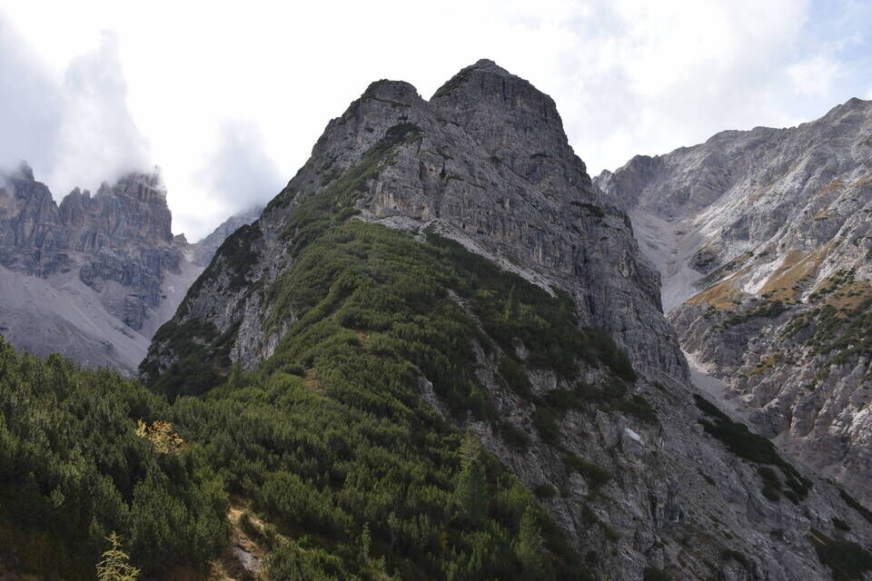
La q2114, tagliata da un'ardita cengia con qualche attrezzatura.
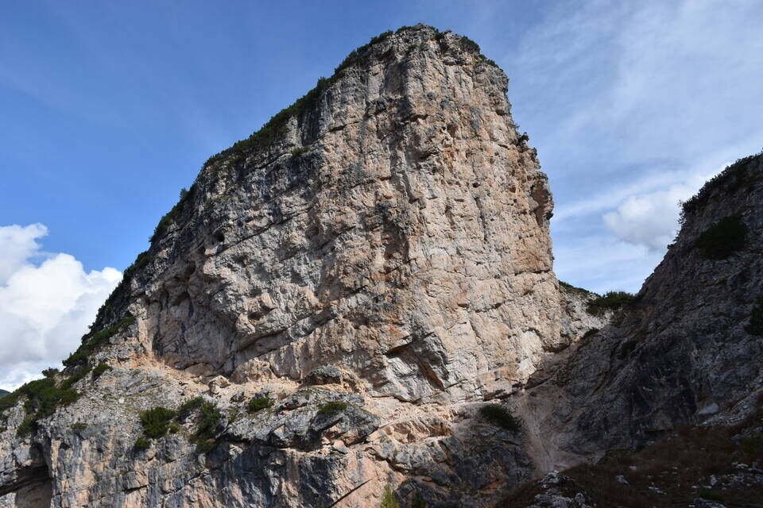
Lou alle prese con la sua prima cengia!
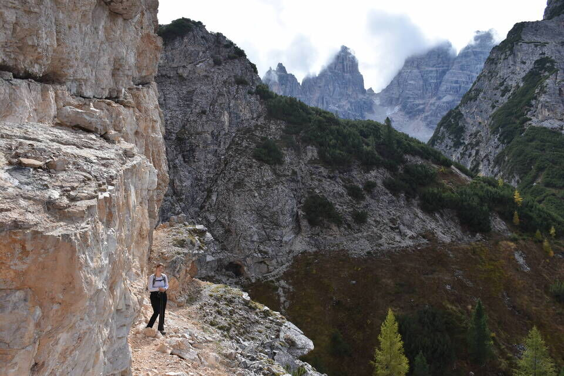
In cima alla q2114.
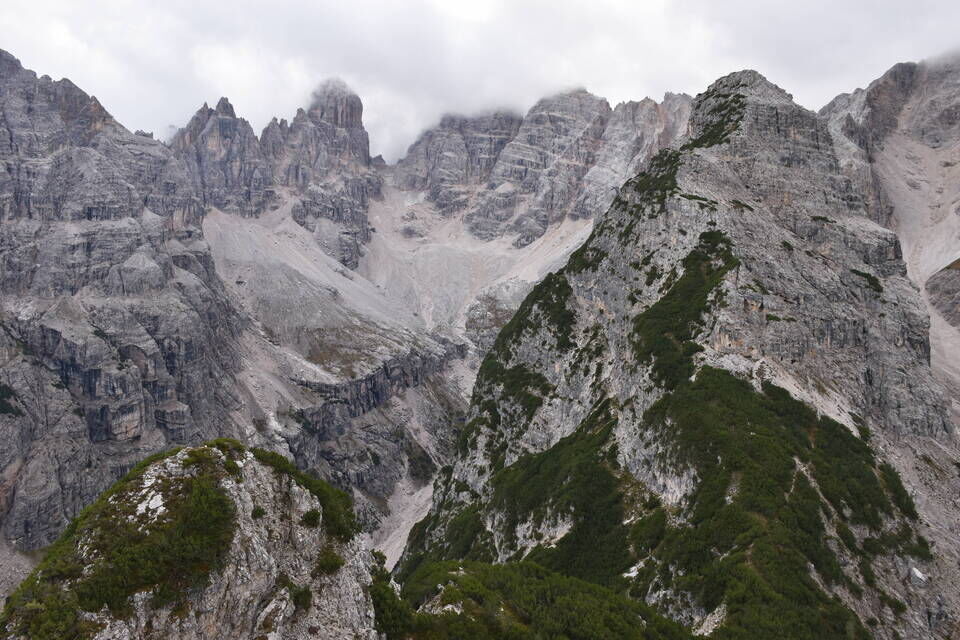
Sono salito qui per guardare più da vicino il ghiacciaio del Cristallo... Maria Vergine che tristezza!
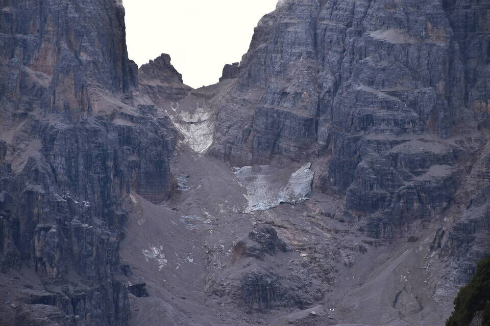
Nel regno di Michl.
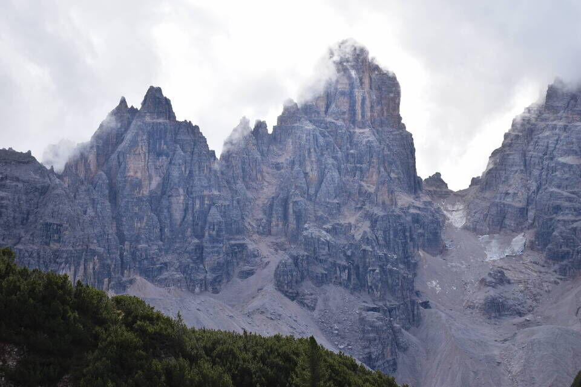
Con la sua cima: per la rampa a dx della vetta (sic) salì Casara.(1)
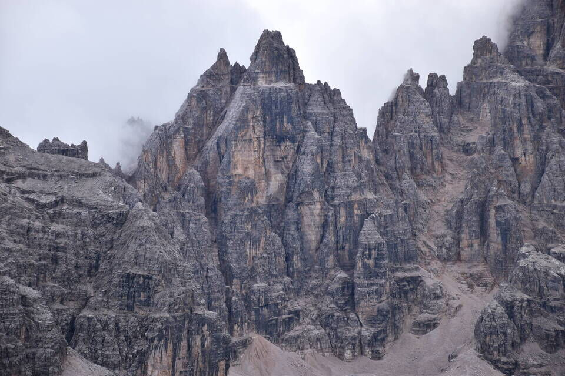
Bella visuale sulla parete ovest del Cristallino: io per quelle cenge c'ho vagato!
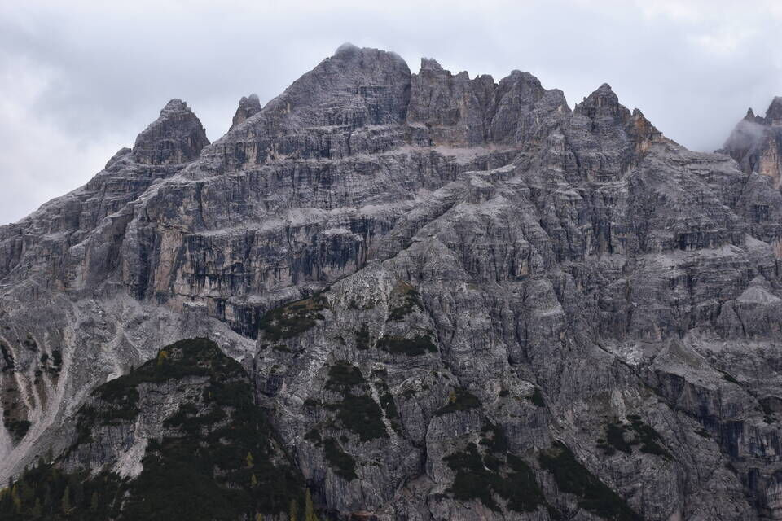
Scendiamo diretti a Carbonin(2) per il sentiero di guerra (Standschützenweg) che percorre il dosso nord.
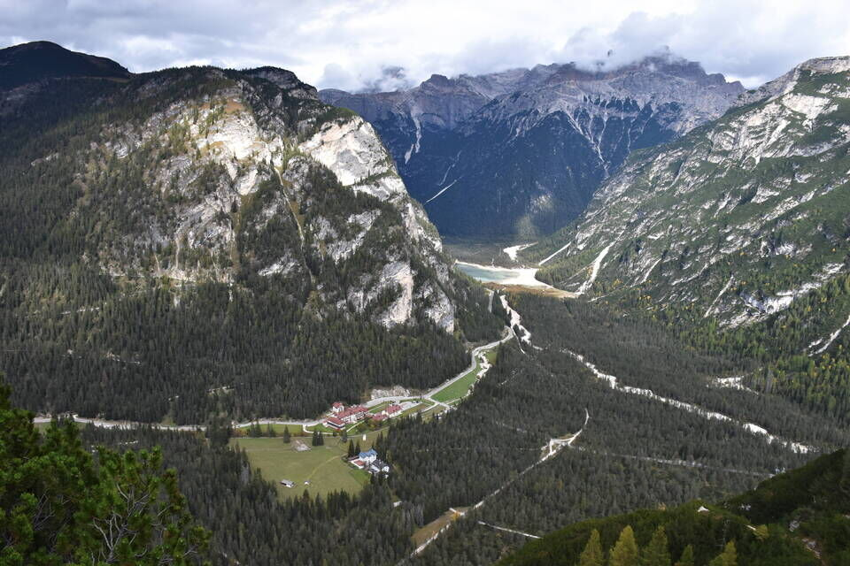
Una soffice distesa di mughi.
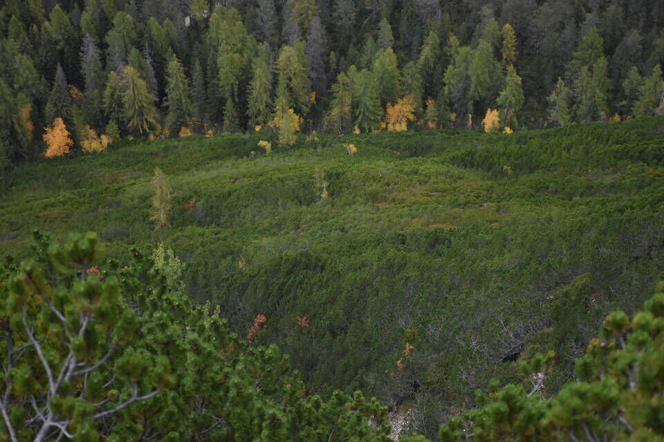
Ci godiamo il tramonto dal Lago di Landro: è questo uno degli angoli delle Dolomiti che preferisco.
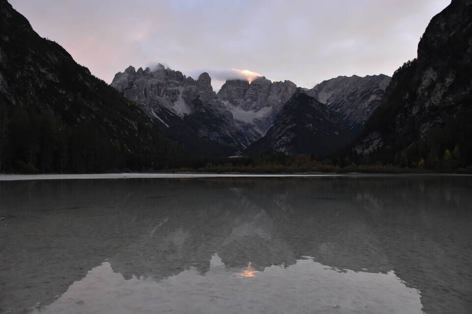
Davvero ammirevole questo articolo di Windchili: Traversata di Forcella del Rauhkofel: dalla Val della Fontana di Sigismondo alla Val Fonda, così come Traversata di Forcella Michele ed esplorazione del ghiacciaio di Popéna (… con ricognizione finale del ghiacciaio del Cristallo).